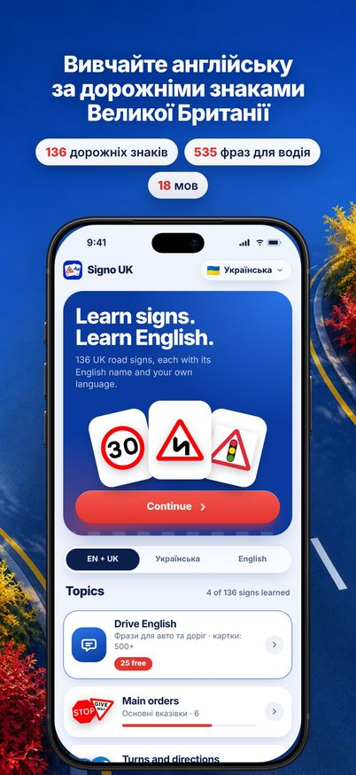
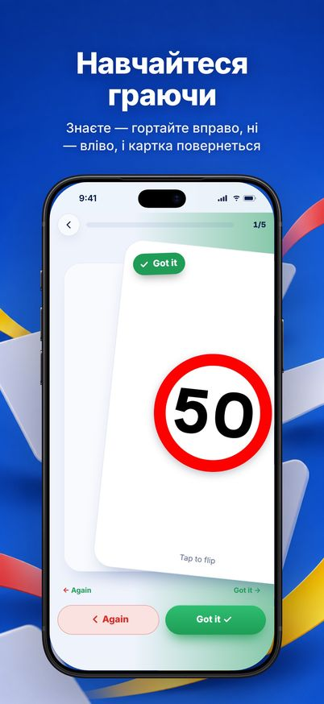
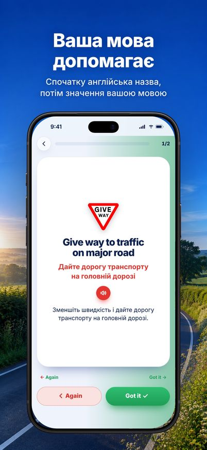
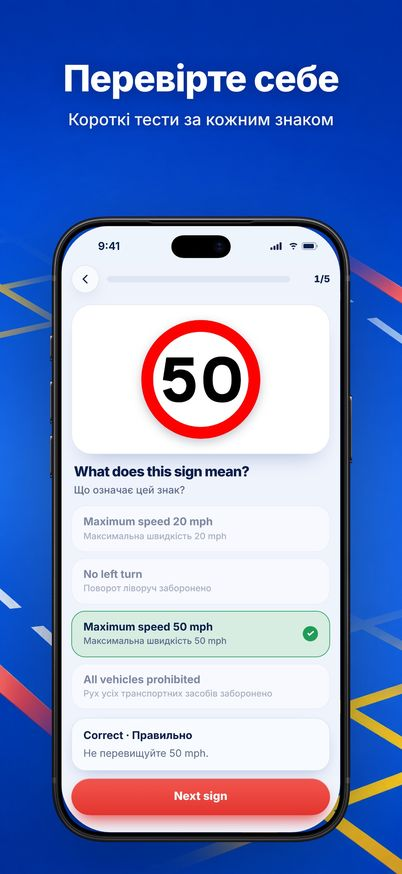
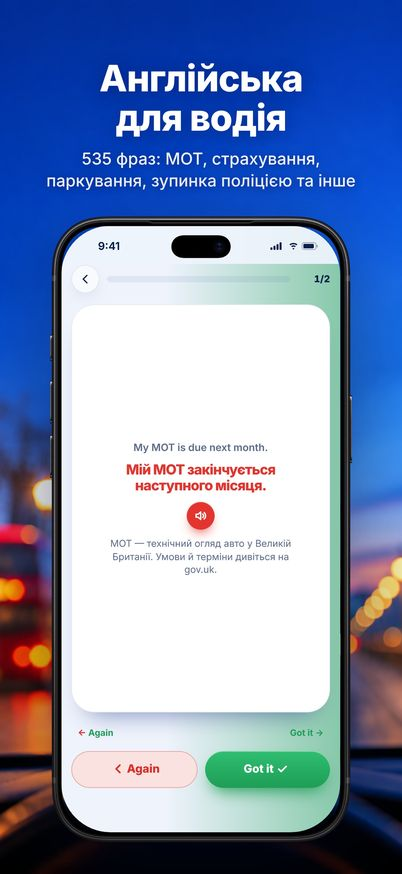
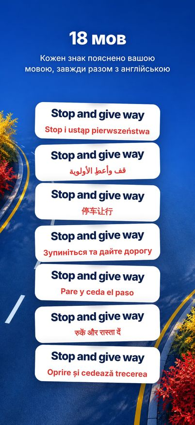
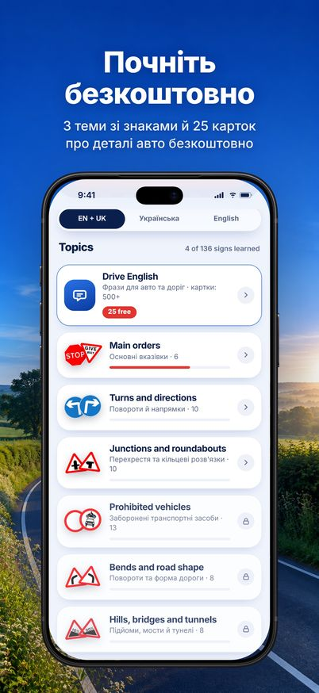
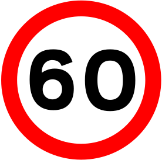
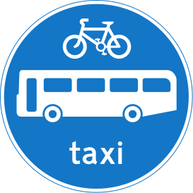
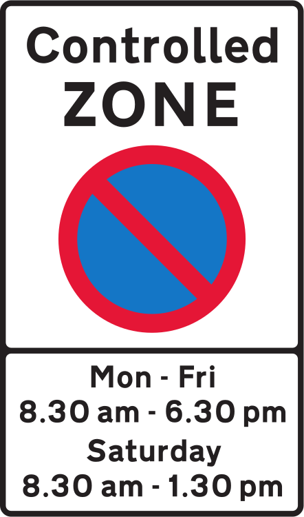

Дорожні знаки Великої Британії українською
Що означає кожен знак і як він називається англійською. Signo — застосунок для iPhone: 136 знаків і 535 фраз для водіння у Великій Британії з поясненням українською.
Завантажити в App StoreБезкоштовно: 3 теми зі знаками і 25 слів про частини авто. Signo Pro відкриває все.


Вчіться як у грі
Знаєте знак — свайп праворуч, ні — ліворуч, і він повернеться. Англійська назва звучить британським голосом, після уроку — короткий тест.







Популярні знаки та їхнє значення
Натисніть на знак, щоб відкрити пояснення.
- Зупиніться та дайте дорогуStop and give way
 Дайте дорогу транспорту на головній дорозіGive way to traffic on major road
Дайте дорогу транспорту на головній дорозіGive way to traffic on major road В'їзд для транспортних засобів забороненоNo entry for vehicular traffic
В'їзд для транспортних засобів забороненоNo entry for vehicular traffic Діє національне обмеження швидкостіNational speed limit applies
Діє національне обмеження швидкостіNational speed limit applies- Максимальна швидкість 30 mphMaximum speed 30 mph
 Максимальна швидкість 20 mphMaximum speed 20 mph
Максимальна швидкість 20 mphMaximum speed 20 mph Максимальна швидкість 40 mphMaximum speed 40 mph
Максимальна швидкість 40 mphMaximum speed 40 mph Максимальна швидкість 50 mphMaximum speed 50 mph
Максимальна швидкість 50 mphMaximum speed 50 mph
Максимальна швидкість 60 mphMaximum speed 60 mph В'їзд до зони 20 mphEntry to 20 mph zone
В'їзд до зони 20 mphEntry to 20 mph zone Обгін забороненоNo overtaking
Обгін забороненоNo overtaking Поворот праворуч забороненоNo right turn
Поворот праворуч забороненоNo right turn Поворот ліворуч забороненоNo left turn
Поворот ліворуч забороненоNo left turn Розворот забороненоNo U-turns
Розворот забороненоNo U-turns Тримайтеся лівого бокуKeep left
Тримайтеся лівого бокуKeep left Міні-кільцеMini-roundabout
Міні-кільцеMini-roundabout- Попереду кільцева розв'язкаRoundabout ahead
 Рух усіх транспортних засобів забороненоAll vehicles prohibited
Рух усіх транспортних засобів забороненоAll vehicles prohibited Рух моторних транспортних засобів забороненоNo motor vehicles
Рух моторних транспортних засобів забороненоNo motor vehicles Зупинка на основній проїзній частині забороненаNo stopping on main carriageway
Зупинка на основній проїзній частині забороненаNo stopping on main carriageway
Маршрут лише для автобусів, педальних велосипедів і таксіRoute for use by buses, pedal cycles and taxis only
В'їзд до зони контрольованого паркуванняEntrance to controlled parking zone Лише для власників дозволуPermit holders only
Лише для власників дозволуPermit holders only Лише для власників бейджа для людей з інвалідністюDisabled badge holders only
Лише для власників бейджа для людей з інвалідністюDisabled badge holders only Місце паркуванняParking place
Місце паркуванняParking place Камери контролю швидкостіSpeed cameras
Камери контролю швидкостіSpeed cameras Зупиніться - ПоліціяStop - Police
Зупиніться - ПоліціяStop - Police Місце, з якого починають діяти правила руху автомагістраллюPoint at which motorway regulations start to apply
Місце, з якого починають діяти правила руху автомагістраллюPoint at which motorway regulations start to apply Попереду світлофорTraffic signals ahead
Попереду світлофорTraffic signals ahead Зебра (пішохідний перехід)Zebra crossing
Зебра (пішохідний перехід)Zebra crossing Попереду діти, що йдуть до школи чи на майданчик або з нихChildren going to or from school or playground ahead
Попереду діти, що йдуть до школи чи на майданчик або з нихChildren going to or from school or playground ahead Дорожні роботиRoad works
Дорожні роботиRoad works Слизька дорогаSlippery road
Слизька дорогаSlippery road Попереду залізничний переїзд зі шлагбаумом або бар'єромLevel crossing with gate or barrier ahead
Попереду залізничний переїзд зі шлагбаумом або бар'єромLevel crossing with gate or barrier ahead Попереду залізничний переїзд без шлагбаума або бар'єраRailway level crossing without gate or barrier ahead
Попереду залізничний переїзд без шлагбаума або бар'єраRailway level crossing without gate or barrier ahead Дайте дорогу зустрічним транспортним засобамGive priority to vehicles from opposite direction
Дайте дорогу зустрічним транспортним засобамGive priority to vehicles from opposite direction Перевага над зустрічним транспортомTraffic has priority over oncoming vehicles
Перевага над зустрічним транспортомTraffic has priority over oncoming vehicles Рух транспортних засобів заввишки понад вказане забороненоNo vehicles over height shown
Рух транспортних засобів заввишки понад вказане забороненоNo vehicles over height shown Попереду Т-подібне перехрестяT-junction ahead
Попереду Т-подібне перехрестяT-junction ahead Попереду перехрестяCrossroads ahead
Попереду перехрестяCrossroads ahead Односмугова дорогаSingle track road
Односмугова дорогаSingle track road Місце роз'їздуPassing place
Місце роз'їздуPassing place
Частини автомобіля англійською
25 слів із безкоштовного розділу Drive English. Натисніть на слово, щоб почути його.
Усі 136 знаків — у застосунку
Безкоштовно: 3 теми зі знаками і 25 слів про частини авто. Signo Pro відкриває все.